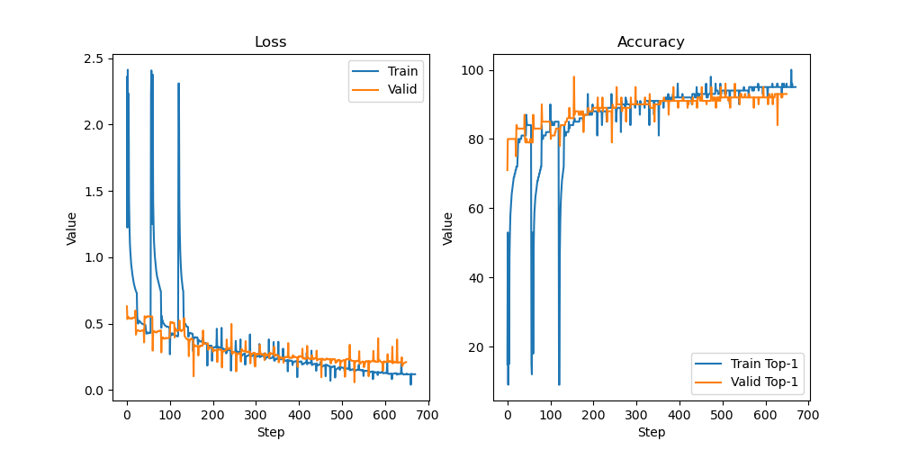
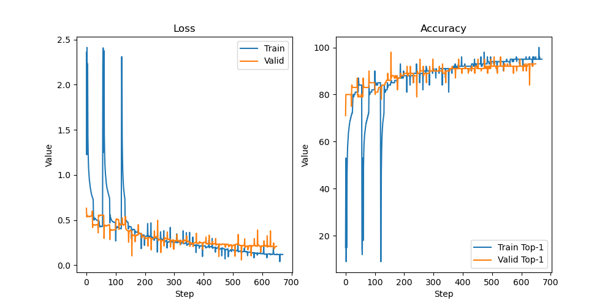

EfficientnetV2
DARTS for neural architecture search
Abstract
For this university project, software was developed to utilize differentiable architecture search (DARTS) to determine the best building block for a cell. Specifically, three types of blocks were compared: Fused-MBConv, MBConv, and Depthwise Separable Convolution. The motivation behind the project was to investigate the developmental process of the Fused-MBConv block, which is a superior architecture building block used in the state-of-the-art image recognizer, EfficientNetV2, developed by the Google brain team. A differentiable architecture search was conducted to evaluate the performance of these three blocks on the Fashion-MNIST dataset. The research aimed to prove that the DARTS algorithm would choose the best block among the three types that were evaluated. However, the findings indicated that for the reduce cell, the algorithm found a mixture of blocks, and for the normal cell, it only used the weakest block, which is the Depthwise Separable Convolution, for unknown reasons.
Introduction
The field of deep learning has witnessed remarkable advancements in the development of efficient image recognition models. One such example is the EfficientNetV2, a state-of-the-art image recognizer developed by the Google brain team. The model used an unknown reinforcement learning-based Neural Architecture Search (NAS) algorithm to converge from the MBConv blocks to the Fused-MBConv blocks. In this study, we investigated the evolutionary path of the Fused-MBConv block and discovered that the Mobilenets depthwise separable convolution (DSConv), inverted residuals, and linear bottlenecks together with the squeeze and excitation block paved the way for the MBConv block and the Fused-MBConv block. By employing the Differentiable Architecture Search (DARTS) algorithm, we explored the performance of three different architecture building blocks, namely Fused-MBConv, MBConv, and DSConv, on the Fashion-MNIST dataset.
Literature research
The evolutionary path of the Fused-MBConv block refers to the development of architectural building blocks that led to the creation of the Fused-MBConv block. The Fused-MBConv block is a type of convolutional neural network (CNN) block that has proven to be effective in improving the accuracy and efficiency of image recognition models. The Mobilenets DSConv was one of the earliest architectural innovations that led to the development of the Fused-MBConv block. It involves a two-step convolution process that separates the spatial and depth-wise convolutional operations, resulting in significant reduction of the computational cost. More details on DSConv in the downloadable pdf:
The inverted residuals and linear bottlenecks were introduced in the MobileNetV2 architecture, which is an extension of the Mobilenets. These architectural innovations helped to address the problem of poor accuracy in Mobilenets and further improved the computational efficiency of the model. The squeeze and excitation block is another architectural innovation that influenced the evolutionary path. The Squeeze-and-Excitation paper proposed a mechanism to selectively emphasize important channels while suppressing less important ones in convolutional layers to improve accuracy on image classification benchmarks. All of these architectural innovations eventually led to the development of the MBConv block, which incorporates the DSConv of Mobilenets, the inverted residuals and linear bottlenecks of MobileNetV2, and the squeeze and excitation block. The Fused-MBConv block combines two of the operations within the MBConv block, leading to faster computation. More details on mobilenetv2, MBConv and Fused-MBConv in the downloadable pdf:Methods
DARTS (Differentiable Architecture Search) is a method for automating the search for neural network architectures. The goal is to find the best architecture for a given task without requiring human expertise in designing neural networks. In the search stage, the DARTS algorithm uses a differentiable relaxation of the architecture search space to learn the best architecture. This involves learning the weights of the different network operations in the architecture. The operations out of which DARTS could choose where DSConv, MBConv and Fused-MBConv. The DARTS search was based on the Fashion-MNIST dataset. The Fashion-MNIST dataset is a popular benchmark dataset used in machine learning and computer vision research. It consists of 70,000 grayscale images of 28x28 pixels each, divided into 10 classes, with 7,000 images per class. The classes include T-shirts/tops, trousers, pullovers, dresses, coats, sandals, shirts, sneakers, bags, and ankle boots. The dataset is a more challenging alternative to the classic MNIST dataset, as it features more complex images with greater variability in the appearance of the different classes. It is worth noting that the distribution of the classes is roughly balanced, with each class accounting for 10% of the dataset. This makes the dataset suitable for evaluating the performance of machine learning algorithms in a multi-class classification setting. In the context of DARTS (Differentiable Architecture Search), the terms "normal" and "reduce" are used to refer to two distinct types of cells that are utilized in the process of architecture search. A "normal" cell is defined as a cell that maintains an unchanged spatial resolution between the input and output, whereas a "reduce" cell is a cell that reduces the spatial resolution between the input and output. More details on DARTS in the downloadable pdf:
Results
Our experiments involved training DARTS on the FashionMNIST dataset for 50 epochs, using the
only available operations DSConv, MBConv, and Fused-mbconv. We present two visualizations of our
training process, including a gif displaying the progress of each epoch for both the normal and
reduce cells, respectively. Additionally, we provide an image with two plots demonstrating the
progress of our training: the first plot shows the progression of the loss over the course of
the training process, while the second plot shows the corresponding accuracy progression. These
visualizations and plots provide insight into the effectiveness and efficiency of our training
process, demonstrating the potential of DARTS to be applied to real-world tasks.

 
The training log can be found on github:

The training log can be found on github:
Conclusion
The high accuracy rates and low loss observed in both the training and validation indicate that the training process was successful. The model has effectively learned the underlying patterns in the data, as evidenced by the consistently low training loss. Furthermore, analysis of the log of the last epoch suggests that the reduce operations generally outperform the normal operations in terms of the softmax values for Alpha - normal and Alpha - reduce. This finding suggests that the reduce operations are more important for achieving good performance on FashionMNIST. Of note, the fusedmbconv operation has the highest alpha values among all operations, underscoring its critical role in achieving strong results on the FashionMNIST dataset. Taken together, these results demonstrate that the model has been trained effectively and performs well on the given data.
Code implementation
Code for this blog:
Code to reproduce the training using google colab and google compute engine:
Code for the DARTS implementation with operations DSConv MBConv and Fused-MBConv:
- Henk Jekel © 2022
- Design: HTML5 UP